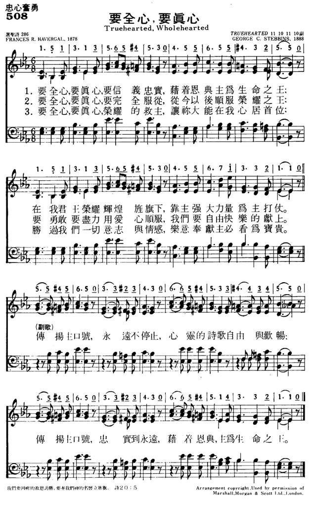
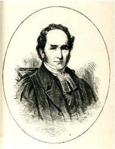

|
|
|
|
1 True-hearted, whole-hearted, faithful and loyal, Refrain: 2 True-hearted, whole-hearted, fullest allegiance 3 True-hearted, whole-hearted, Saviour all-glorious!
|
508要全心，要真心
1.要全心要真心 要信义忠实
借着恩典主为生命之王 在我君王荣耀辉煌旌旗下 靠主强大力量为主打仗 传扬主口号 永远不停止 心灵的诗歌 自由与欢畅 传扬主口号 忠实到永远 借着恩典 主为生命之王 2.要全心要真心 要完全服从 从今以后顺服荣耀之王 要勇敢要尽力用爱心顺服 我们要自由快乐的献上 3.要全心要真心 荣耀的救主 让祢大能在我心居首位 胜过我们一切意志与情感 乐意奉献主必看为宝贵 |
|
https://www.mred365.cn/szxg/7511.html
 https://hymnary.org/hymn/WASH1957/page/425
|
|
|
|
|

-

CD06 11 True hearted, whole hearted 要全心要真心 https://youtu.be/ixtpnQr62oo -
672 要全心，要真心 https://youtu.be/dwaM8gqt3ww
| Text: | True-Hearted, Whole-Hearted |
| Author: | Frances R. Havergal, 1836-1879 |
| Tune: | [True-hearted, whole-hearted, faithful and loyal] |
| Composer: | George C. Stebbins, 1846-1945 |
| Short Name: | Frances R. Havergal |
| Full Name: | Havergal, Frances Ridley, 1836-1879 |
| Birth Year: | 1836 |
| Death Year: | 1879 |
Havergal, Frances Ridley,


daughter of the Rev. W. H. Havergal, was born at Astley, Worcestershire, Dec. 14, 1836. Five years later her father removed to the Rectory of St. Nicholas, Worcester. In August, 1850, she entered Mrs. Teed's school, whose influence over her was most beneficial. In the following year she says, "I committed my soul to the Saviour, and earth and heaven seemed brighter from that moment." A short sojourn in Germany followed, and on her return she was confirmed in Worcester Cathedral, July 17, 1853. In 1860 she left Worcester on her father resigning the Rectory of St. Nicholas, and resided at different periods in Leamington, and at Caswall Bay, Swansea, broken by visits to Switzerland, Scotland, and North Wales. She died at Caswell Bay, Swansea, June 3, 1879.
Miss Havergal's scholastic acquirements were extensive, embracing several modern languages, together with Greek and Hebrew. She does not occupy, and did not claim for herself, a prominent place as a poet, but by her distinct individuality she carved out a niche which she alone could fill. Simply and sweetly she sang the love of God, and His way of salvation. To this end, and for this object, her whole life and all her powers were consecrated. She lives and speaks in every line of her poetry. Her poems are permeated with the fragrance of her passionate love of Jesus.
Her religious views and theological bias are distinctly set forth in her poems, and may be described as mildly Calvinistic, without the severe dogmatic tenet of reprobation. The burden of her writings is a free and full salvation, through the Redeemer's merits, for every sinner who will receive it, and her life was devoted to the proclamation of this truth by personal labours, literary efforts, and earnest interest in Foreign Missions.
[Rev. James Davidson, B.A.]
Miss Havergal's hymns were
frequently printed by J. & R. Parlane as leaflets, and by Caswell & Co. as
ornamental cards. They were gathered together from time to time and
published in her works as follows:—
(1) Ministry of Song, 1869; (2) Twelve
Sacred Songs for Little Singers, 1870; (3) Under the
Surface, 1874; (4) Loyal Responses, 1878; (5) Life
Mosaic, 1879; (6) Life Chords, 1880; (7) Life
Echoes, 1883.
About 15 of the more important of Miss Havergal's hymns, including "Golden
harps are sounding," "I gave my life for thee," "Jesus, Master, Whose I am,"
"Lord, speak to me," "O Master, at Thy feet," "Take my life and let it be,"
"Tell it out among the heathen," &c, are annotated under their respective
first lines. The rest, which are in common use, number nearly 50. These we
give, together with dates and places of composition, from the Havergal mss.
[manuscript], and the works in which they were published. Those, and they
are many, which were printed in Parlane's Series of
Leaflets are distinguished as (P., 1872, &c), and those in Caswell’s series
(C., 1873, &c).
| Short Name: | George C. Stebbins |
| Full Name: | Stebbins, George C. (George Coles), 1846-1945 |
| Birth Year: | 1846 |
| Death Year: | 1945 |

Stebbins studied music in Buffalo and Rochester, New York, then became a singing teacher. Around 1869, he moved to Chicago, Illinois, to join the Lyon and Healy Music Company. He also became the music director at the First Baptist Church in Chicago. It was in Chicago that he met the leaders in the Gospel music field, such as George Root, Philip Bliss, & Ira Sankey.
At age 28, Stebbins moved to Boston, Massachusetts, where he became music director at the Claredon Street Baptist Church; the pastor there was Adoniram Gordon. Two years later, Stebbins became music director at Tremont Temple in Boston. Shortly thereafter, he became involved in evangelism campaigns with Moody and others. Around 1900, Stebbins spent a year as an evangelist in India, Egypt, Italy, Palestine, France and England.
(www.hymntime.com/tch)
Tune Information
| Title: | TRUE-HEARTED (Stebbins) |
| Composer: | George C. Stebbins (1890) |
| Meter: | 11.10.11.10.10.10.10.10 |
| Incipit: | 15131 35654 53455 |
| Copyright: | Public Domain |
祂不能救自己
“祂不能救自己，必須死髑髏地…”每當讀到主耶穌被釘十字架之前，受盡戲弄和羞辱的那一段記載，心中就湧出這首詩歌。
此詩是海弗格爾（Frances
Ridley Havergal）所寫。她是一位一生奉獻給神而大有恩賜的姊妹。於1836年
出生在英國一個虔誠愛主的家庭。父親是聖公會的傳道人，也是詩歌作家，對英國教會有很大的貢獻。由於受到父親的薰陶，自幼愛好曲譜音樂，因而使她終身樂於
把豐富的靈感寫成優美的詩歌。在她十四歲時，清楚得救，並對神有一個如饑似渴的靈，使她愛慕神的話，實際經歷神的應許。更因主愛的激勵，甘心獻身於貧民窟
中，為那些饑餓、受凍、被藐視的貧民帶來天上的安慰和扶助。
她畢生遵守主的吩咐：“只是要我們紀念窮人”（加二10），服事貧苦人民，曾被列為英國當代七 位偉大女性之一，與維多利亞女皇並列。惜因積勞過度，四十二歲死於肺炎。
所寫詩歌有第 91，168，304，331，334，339，350，528等首。這些詩歌都說出她對主極寶貴的認識和經歷，以及長期經過十字架的雕刻和對付而有的結
晶，不僅影響當代的人，也帶給教會莫大的祝福。（整理自《詩歌簡介》）
“祂不能救自己，必須死髑髏地…”神愛我們，差遣祂的愛子，取了罪之肉體的形狀，成為逾越節的羊羔，為我們作了犧牲。褻瀆祂的人看見祂的被釘，戲弄祂
說：“救你自己吧，從十架上下來吧！”面對這種嘲諷、侮慢，我們的主如羔羊被牽到宰殺之地，在剪毛的人手下無聲，沒有被激怒，沒有跳下十字架。祂不是不能
救自己，但因祂受的刑罰，我們才能得平安，因祂受的鞭傷，我們才能得醫治；“真的，神兒子當流血，罪人才能洗得清潔”。要不是主的“不能救自己”，我們這
些“荒涼罪人”，怎能進入主救恩之門？
“祂不能救自己，必須成全公義…”罪的工價乃是死，在公義的神面前，我們這些滿了敗壞、生活在罪惡過犯之中、不潔、不義、不法的罪人怎能免去神公義的審判？若不犧牲，罪就不得赦免，“律法非此不算還債，非此，罪惡不能寬貸”。所以“祂不能救自己”！
“祂不能救自己，因為祂是代替…”：“因基督也曾一次為罪受死，就是義的代替不義的”（彼前三18），祂是“義”的，卻代替了我們這“不義”的，“祂沒 有犯過罪，口�堣]找不到詭詐”（彼前二22），祂是“無罪”的，神卻使我們眾人的罪孽都歸在祂身上，祂親自擔當了我們的罪，並替我們成為罪，好叫我們在祂 �堶惘足偺囿爾q（林後五21）。因此，“祂不能救自己”，祂必須“在十字架上流血，擔當信徒一切罪孽”。
“祂不能救自己，這愛怎麼樣呢！…這愛那有止極！…”每當想到主在十字架上為我們所承受的，那些的羞辱、侮慢、摧殘、鞭捶、蹧蹋、嘲諷、頂撞等等的對
待，這些原是我們該受的，祂竟成為我們包羅萬有的頂替，祂為我們罪愆所受的委屈，說出主愛的至極。因此面對這樣“那有止極的愛”，我們“冷淡的心”不僅應
發出感贊，也能受到這愛的困迫，被激勵活在祂救贖工作所完成的“那靈”�堙A享受祂包羅萬有的頂替，以活祂、彰顯祂，並獻上罪人為祭物，好讓祂那“不能救自
己”的愛，得到真正的紀念和讚美。 陳林秀華
詩歌賞析,@091
祂不能救自己
海弗格爾是一位一生奉獻給神而大有恩賜的姊妹。她生在一個愛主的家庭，父母都很愛主。她特有的音樂天才是她父親，著名的音樂編著家，所培植成功的。此外
她對神有一個如饑如渴的靈，使她愛讀神的話，實在地經歷神的應許。她也是一個舍己跟隨主的人，為著基督的緣故揀選了貧窮，常在貧民窟中工作。當她臨終時許
多友人圍繞在她的床邊，雖然病痛使她非常痛苦，然而她的平安卻是令人感動，而且驚奇她�堶悸熙葝眲v溢於她的面光中。彌留之際，她忽然引聲高歌，。當她唱到
最後一個“祂”字時，聲音忽如急弦中斷，她已經過幔子去見她的王了。
她的詩歌有一特徵：優美柔和，使人愛慕主的心油然而生。
她說：“我作詩是和我禱告一樣。”
http://www.jinjen.url.tw/00ha/hymreadaa.htm
True-Hearted, Whole-Hearted
Words: Frances Ridley Havergal (b. Dec. 14, 1836; d. June 3, 1879)
Music: George Coles Stebbins (b. Feb. 26, 1846; d. Oct. 6, 1945)
Links:
Wordwise Hymns (Frances Havergal born, died)
The Cyber Hymnal
Hymnary.org
Note: With nine original stanzas (72 lines, including the refrains) this 1878
hymn is quite lengthy. It is also of interest that three stanzas (CH-5-7) are
framed as a negative, strongly rejecting any thought of half-heartedness in our
loyalty to Christ. Unusual too are the two stanzas (CH-8 and 9) directed
especially to women (“sisters”). That is because the song was used at one time
as the official Y.W.C.A. hymn (in the days when the Young Women’s Christian
Association had a strong spiritual component in its program).
It’s worth reading all nine stanzas, and they can be found on the Cyber Hymnal
link. However, hymnals today use only the first three stanzas of this fine hymn.
CH-1 is first; CH-3 is placed second; CH-2 is last, with its first line changed
to, “True-hearted, whole-hearted, Saviour all-glorious.”
In times of war and international conflict there are individuals who inhabit the
shadowy world of the double agent. A double agent claims to work faithfully for
one government, while actually serving traitorously to the benefit of the enemy.
During the Cold War, Kim Philby did that. Mr. Philby was a respected member of
British Intelligence, and an officer of the Order of the British Empire. The
latter, like our own Order of Canada, was awarded to him for loyal service to
his country. But all the while Philby belonged to a spy ring feeding secret
information to the Soviet Union. When he died in Moscow in 1988, he was awarded
a hero’s funeral and numerous medals. The USSR even produced a postage stamp in
his honour.
There were double agents in the Bible too. King David had a respected counselor
named Ahithophel. His wisdom was so admired that it was said, “the advice of
Ahithophel, which he gave in those days, was as if one had inquired at the
oracle of God” (II Sam. 16:23). However, when David’s son Absalom led a
rebellion against the king, Ahithophel readily served the conspirators. David
said, in grief, “Even my own familiar friend in whom I trusted, who ate my
bread, has lifted up his heel against me” (Ps. 41:9).
In the New Testament, the most famous traitor is Judas Iscariot. Though he
pretended to be a loyal disciple of Christ, he betrayed the Saviour to the
Jewish leadership on being paid thirty pieces of silver (Matt. 26:14-15). Greed
for money motivated him. Appointed to be the treasurer of the twelve, he helped
himself to the funds (Jn. 12:6). Judas’s pretense was so successful none of the
others suspected it. When, the Lord Jesus said, in the upper room, that one of
His followers would betray him, none of the others pointed the finger at Judas
(Matt. 26:21-22).
In sharp contrast is the later declaration of loyalty from the Apostle Paul.
When he was warned of the dangers that faced him in his service for Christ, he
exclaimed, “None of these things move me; nor do I count my life dear to myself,
so that I may finish my race with joy, and the ministry which I received from
the Lord Jesus, to testify to the gospel of the grace of God” (Acts 20:24). That
is how he lived, and how he died. He was able to say, at the end of his life, “I
have fought the good fight, I have finished the race, I have kept the faith” (II
Tim. 4:7).
The year before her death, Frances Havergal published a hymn that expresses a
desire for unwavering loyalty to the Lord Jesus Christ. It begins:
CH-1) True-hearted, whole-hearted, faithful and loyal,
King of our lives, by Thy grace we will be;
Under the standard exalted and royal,
Strong in Thy strength we will battle for Thee.
Peal out the watchword! Silence it never!
Song of our spirits, rejoicing and free;
Peal out the watchword! Loyal forever!
King of our lives, by Thy grace we will be.
But she recognizes that, to quote the Lord Jesus, so often “the spirit indeed is
willing, but the flesh is weak” (Matt. 26:41). In a stanza not used today, the
hymn continues:
CH-4) True-hearted! Saviour, Thou knowest our story,
Weak are the hearts that we lay at Thy feet,
Sinful and treacherous! yet, for Thy glory,
Heal them, and cleanse them from sin and deceit.
Though some hymn books only include three stanzas of this hymn, the original, as
noted above, dealt specifically with the problem of having divided loyalties in
our life and service for Christ. When it comes to the things of God, some try to
give limited time and energy to religion, living more for the pleasures of the
world that for commitment to Christ. Of these the hymn writer says:
CH-7) Half-hearted? Master, shall any who know Thee
Grudge Thee their lives, who has laid down Thine own?
Nay! we would offer the hearts that we owe Thee,
Live for Thy love and Thy glory alone.
Questions:
1) In what ways can we be half-hearted, or even disloyal in our Christian lives?
2) What will be the common marks of whole-heartedness and loyalty toward Christ?
Links:
Wordwise Hymns (Frances Havergal born, died)
The Cyber Hymnal
Hymnary.org
"TRUE-HEARTED, WHOLE-HEARTED"
hymnstudiesblog
"Watch ye, stand fast in the faith…be strong" (1 Cor. 16.13)
INTRO.:
A song which encourages us to watch, stand fast in the faith, and be strong is "True-Hearted, Whole-Hearted" (#502 in Hymns for Worship Revised and #327 in Sacred Selections for the Church). The text was written by Frances Ridley Havergal (1836-1879). Producing it in ten stanzas while touring with a group of friends at Ormont Dessous, Switzerland, in September of 1874, she referred to it in one of her circular letters to family as "’True Hearted!’ New Year’s Address (in verse) for Y. W. C. A. for January 1875." It was first published in her Loyal Responses, or Daily Melodies for the King’s Minstrels of 1878. Miss Havergal was the author of other beloved hymns such as "I Bring My Sins To Thee," "I Gave My Life For Thee," "Is It For Me?", "Lord, Speak To Me," and "Take My Life, And Let It Be."
The tune (Truehearted) was composed by George Coles Stebbins (1846-1945). During a meeting in New Haven, CT, he took stanzas 1, 2, and 4 of Miss Havergal’s hymn, and used stanza 3 as a refrain. This version first appeared as a four-part song for male quartet in The Male Chorus of 1888 compiled by Stebbins and Ira D. Sankey. Later, Stebbins rearranged it for mixed voices in the 1890 Winnowed Songs for Sunday School. The following year, it became well known through its inclusion in Gospel Hymns No. 6. The copyright was renewed by Stebbins in 1916, and it later passed to the Hope Publishing Co. Other famous Stebbins melodies are used with "Have Thine Own Way, Lord," "I’ve Found A Friend," "Jesus Is Tenderly Calling," "Must I Go and Empty-Handed?", "Jesus, I Come," "Savior, Breathe an Evening Blessing," "Saved By Grace," "Take Time to Be Holy," "Throw Out the Lifeline," and "Ye Must Be Born Again."
Among hymnbooks published by members of the Lord’s church during the twentieth century for use in churches of Christ, "True-Hearted, Whole-Hearted" appeared in the vast majority, including the 1921 Great Songs of the Church (No. 1) and the 1937 Great Songs of the Church No. 2 both edited by E. L. Jorgenson; the 1948 Christian Hymns No. 2 and the 1966 Christian Hymns No. 3 both edited by L. O. Sanderson; the 1963 Abiding Hymns edited by Robert C. Welch; and the 1963 Christian Hymnal edited by J. Nelson Slater. Today it may be found in the 1971 Songs of the Church, the 1990 Songs of the Church 21st C. Ed., and the 1994 Songs of Faith and Praise all edited by Alton H. Howard; the 1978/1983 (Church) Gospel Songs and Hymns edited by V. E. Howard; and the 1992 Praise for the Lord edited by John P. Wiegand; in addition to Hymns for Worship and Sacred Selections.
The song discusses the spiritual warfare in which Christians are engaged and urges them to be faithful.
I. Stanza 1 emphasizes faithfulness
"True-hearted, whole-hearted, faithful and loyal,
King of our lives, by Thy grace we will be;
Under the standard, exalted and royal,
Strong in Thy strength we will battle for Thee."
A. Jesus wants us to be loyal and faithful to Him: Rev. 2.10
B. Those who are faithful to Him will always live for Him as symbolized by
marching under His standard or banner: Ps. 60.4
C. Also, they will strive to be strong in the Lord and in the power of His
might: Eph. 6.10
II. Stanza 2 emphasizes obedience
"True-hearted, whole-hearted, fullest allegiance,
Yielding henceforth to our glorious King;
Valiant endeavor and loving obedience,
Freely and joyously now would we bring."
A. Jesus is our King, sitting on His throne at the right hand of God: Acts
2.30-32
B. Our King wants us to be obedient to Him: Heb. 5.8-9
C. Therefore, we must freely and joyously come to Him: Matt. 11.28-30
III. Stanza 3 emphasizes surrender
"True-hearted, whole-hearted, Savior all glorious!
Take Thy great power and reign their alone,
Over our wills and affections victorious,
Freely surrendered and wholly Thine own."
A. Jesus is also our Savior: Matt. 1.21
B. He wants to reign in our hearts, to have His kingdom within us: Lk. 17.21
C. Therefore, we must be freely surrendered by taking up the cross and
following Him: Matt. 16.24
IV. Stanza 4 emphasizes cleansing
"True-hearted! Savior, Thou knowest our story;
Weak are the hearts that we lay at Thy feet,
Sinful and treacherous! Yet, for Thy glory,
Heal them, and cleanse them from sin and deceit."
A. We recognize that our hearts are weak: Jer. 17.9
B. The reason is that we have allowed sin in our lives: Rom. 3.23
C. Therefore, we must turn to Jesus to heal and cleanse us from our sin so that
we can be useful vessels: Eph. 5.26, 2 Tim. 2.20-21
V. Stanza 5 emphasizes the rest before us
"Jesus is with us, His rest is before us,
Brightly His standard is waving above!
Sisters, dear sisters, in gathering chorus,
Peal out the watchword of courage and love!"
A. Jesus has promised to be with us as we go about doing His will: Matt.
28.18-20
B. The reward that He offers us in our service to Him is rest from our labors
at the end of the way: Rev. 14.13
C. Remembering that this was apparently written originally for a Young Women’s
Christian Association meeting, we might alter this stanza to read, "Brothers and
sisters, in gathering chorus" to encourage all Christians to peal out the
watchword by sounding out the word of the Lord: 1 Thess. 1.8
CONCL.:
The chorus reminds us of the need to be alert and active in the service of the
Lord.
"Peal out the watchword! silence it never!
Song of our spirits, rejoicing and free.
Peal out the watcfhword! loyal forever,
King of our lives, by Thy grace we will be."
The other stanzas are as follows:
(6) "Half-hearted, false-hearted! Heed we the warning!
Only the whole can be perfectly true;
Bring the whole offering, all timid thought scorning,
True-hearted only if whole-hearted too."
(7) "Half-hearted! Savior, shall aught be withholden,
Giving Thee part Who has given us all?
Blessings outpouring, and promises golden
Pledging, with never reserve or recall?"
(8) "Half-hearted? Master, shall any who know Thee
Grudge Thee their lives, Who has laid down Thine own?
Nay! we would offer the hearts that we owe Thee,
Live for Thy love and Thy glory alone."
(9) "Sisters, dear sisters, the call is resounding,
Will ye not echo the silver refrain,
Mighty and sweet, and in gladness abounding?–
‘True-hearted, whole-hearted!’ ringing again."
We must certainly recognize that if we hope to please the Lord here and receive
a home in heaven, He demands that in living our lives and serving Him we be
"True-Hearted, Whole-Hearted."
https://hymnstudiesblog.wordpress.com/2008/11/20/quottrue-hearted-whole-heartedquot/